- 校舎案内
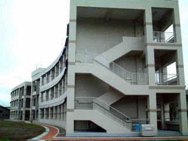
教室がある南側の校舎です。 まるで大きな生き物のようにうねっています。 北高生をしっかり包み込み見守ります。
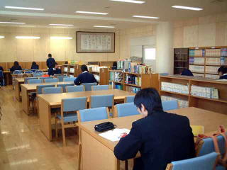
吹き抜けの図書室の二階は学習センターです。 開いている時は誰でも使用でき、落ち着いた空間で集中して勉強できます。 調べものをする時や総合学習の時間にも活用されます。
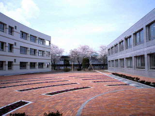
中央廊下から扇形に広がる中庭を眺めます。 向かいの桜の後ろに見えるのは部室棟です。
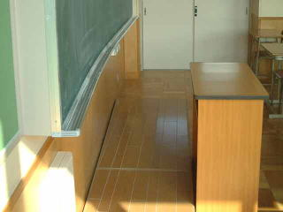
曲がった教室の壁に合わせて教壇も作られています。 少し分かりにくいですが左端が向こう側(廊下側）にむかって幅が広がっています。
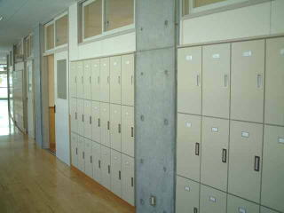
廊下の教室側の壁は個別のロッカーになっています。 構造上、東側の棟のロッカーの方が建物のカーブの外側にあるため若干、広く作られているようです。（写真は東側）
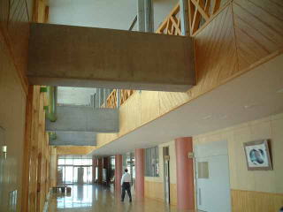
吹き抜けの広い中央廊下です。 教室と玄関を結ぶ唯一の廊下なので帰り際、友達を待つ人の姿を見受けます。 先生方や先輩、後輩が顔を合わせたりするのもここで、挨拶がたくさん交されるポイントです。
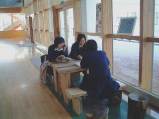
旧校舎の中庭にあった青桐は生まれ変わってベンチとして中央廊下にあります。 西日が入る放課後は二人掛けのベンチに座りロマンチックな気分。まさに青春です。
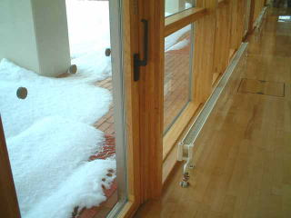
外は大雪でも中央廊下は床暖房のおかげで全く寒くありませんし、 窓際のオイルヒーターのおかげで窓には水滴一つ付きません。
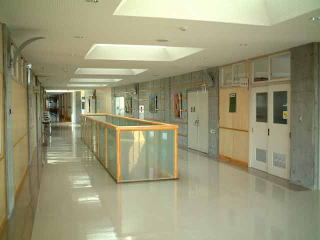
管理棟2階の吹き抜けです。 天窓からの採光は１階まで届きます。壁に囲まれた広い１階廊下も閉塞感はありません。よく音も響くポイントで光と同様に１階まで届きます。
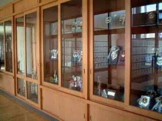
生徒玄関を入って目の前にトロフィーや盾が並びます。 先輩方の栄光を前に今日もがんばろうと胸に誓います。
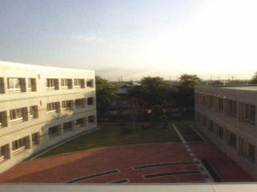
中央廊下３階のテラスから眺める夕日です。 空の色の美しさを見ながら、いつまでも平和な明日を望みます。
生徒が下校した後の校舎です。